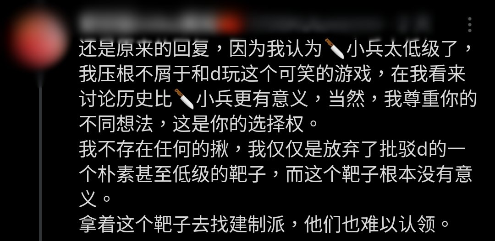

第二階段：在他人提出質疑時，再次強調立場，但同時開始試圖轉移話題偷換論題。這個階段你只要咬住原論題不放，接下來主動權就是你的了。
第三階段：開始進一步的轉進，然後同時開始“我其實不屑於對線啊blablabla”
最後階段便是“累了不辨了”，轉進都失敗了，只能給自己找塊遮羞布來蓋了🤣（2/2）

第三階段：開始進一步的轉進，然後同時開始“我其實不屑於對線啊blablabla”
最後階段便是“累了不辨了”，轉進都失敗了，只能給自己找塊遮羞布來蓋了🤣（2/2）

某位聲稱自己“不屑於對線”的“建制左派”卻經常跟人對線，也是比較難繃💦
個人觀察出他的辯論方式分幾個階段：
第一階段：通過長篇大論的“選擇性敘述”來輸出自己的立場（通常是很隱晦的那種，你找不到直接輸出立場的句子，但是可以感覺出來）。在這個階段，他一般氣勢很足。（1/2） https://t.co/b8e2Ffu6G5
個人觀察出他的辯論方式分幾個階段：
第一階段：通過長篇大論的“選擇性敘述”來輸出自己的立場（通常是很隱晦的那種，你找不到直接輸出立場的句子，但是可以感覺出來）。在這個階段，他一般氣勢很足。（1/2） https://t.co/b8e2Ffu6G5